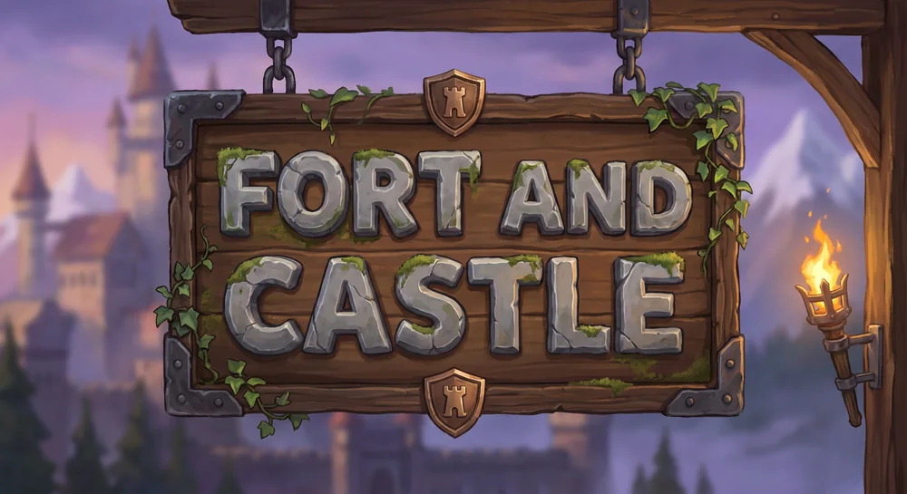
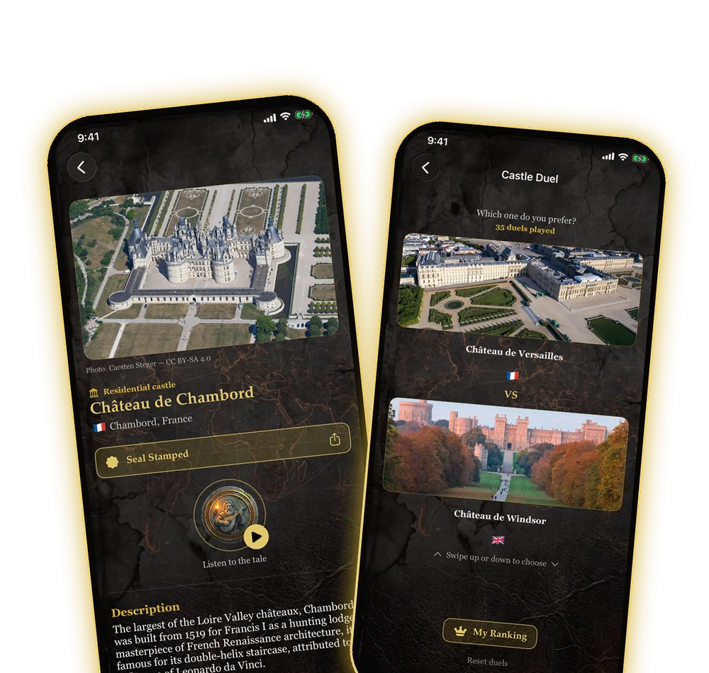
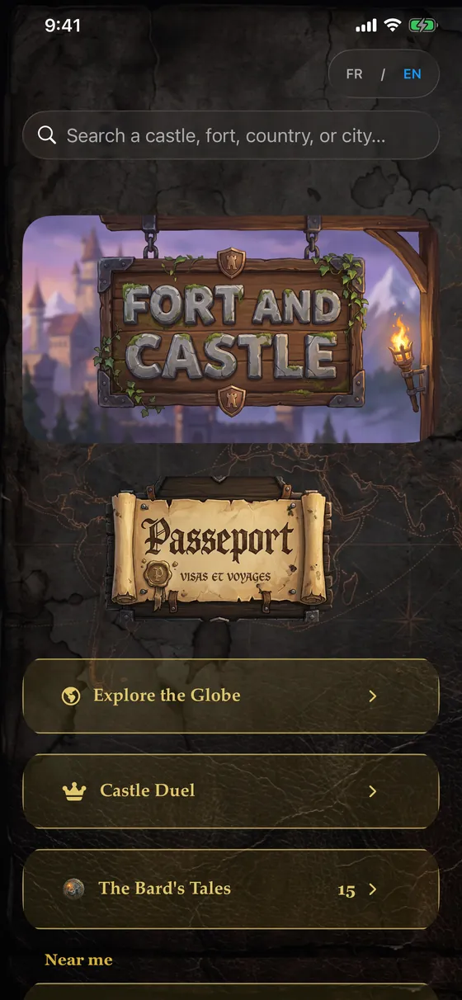
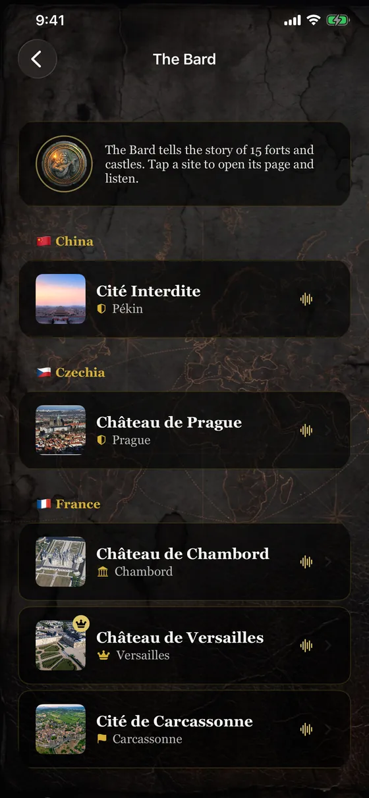
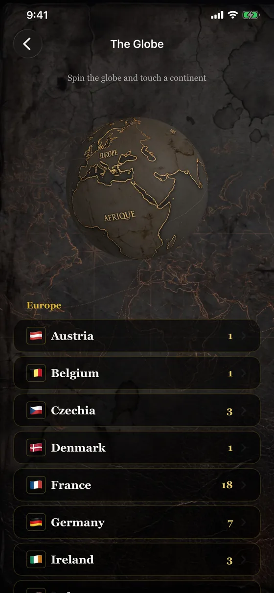
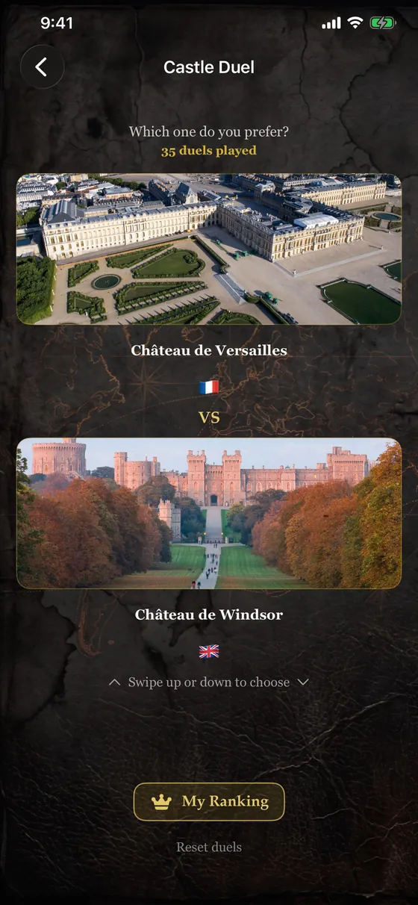
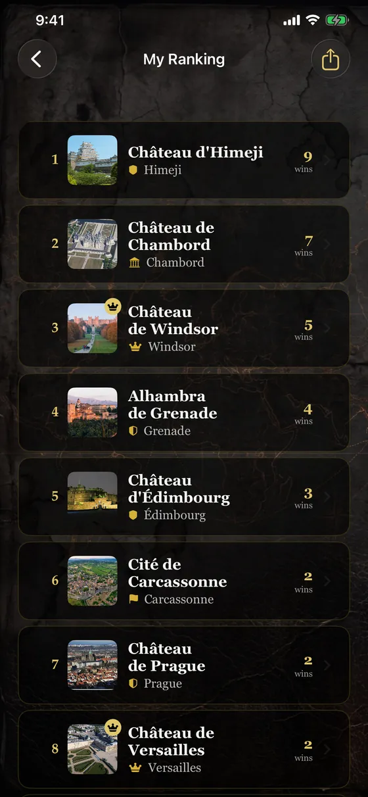
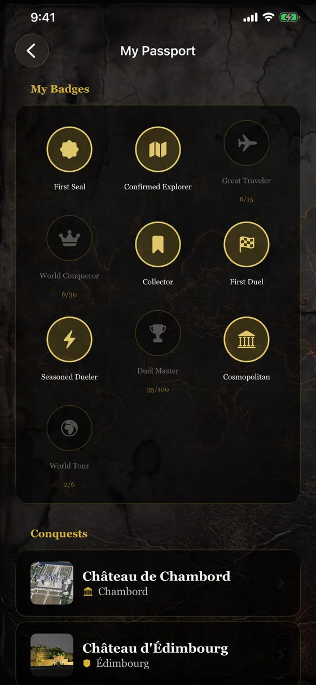

The index of the world's fortresses
Discover the world's fortresses.
Fort et Château (Fort and Castle in English) gathers 156 forts, castles and palaces across 38 countries. Spin the 3D globe, listen to the Bard tell the story of each place, duel your favorite castles and fill your Explorer's Passport. Unlock their secrets.

Version 1.3: free, and more castles
The journey keeps growing: more countries, more tales, and a free starting point.
- Fort et Château is now free to download: one site per country is included (38 emblematic forts and castles), and a one-time purchase unlocks the rest
- 25 new forts and castles, including 6 new countries: Austria, Belgium, Slovenia, Norway, Mexico and Colombia
- New “The Bard's Tales” section: every narrated site, grouped by country
- Anyone who already bought the app keeps everything unlocked, at no extra cost
- In total: 156 sites in 38 countries
What Fort et Château does
One journey, six ways to explore
3D Globe
Spin the globe, touch a continent and discover its countries: 38 countries across 6 continents.
Illustrated pages
Photo, the place's history, a map to get directions and a “Castle Secret” you reveal by scratching the screen.
The Bard
Touch the medallion: a voice tells the story of the place, in French or English. 15 narrated sites.
Castle Duel
Two castles, one choice. Your personal ranking builds up duel after duel, with a Top 3 to share.
Explorer's Passport
On site, validate your visit: your wax seal is stamped (position checked within 300 m). 10 badges to earn.
Sketchbook
Private notes, photos from your visit, beauty and accessibility ratings, to keep the memory of every place.
The catalog
From Chambord to Himeji
Fairy-tale castles, citadels, coastal forts, fortified palaces: 156 places to discover, from Europe to Oceania.


Photos: Wikimedia Commons (free licenses). Full credits.

The Bard
Listen to the story of each place
On flagship sites, the Bard tells the story of the place in about twenty seconds. Try two samples:
Château de Chambord · France
The largest of the Loire Valley châteaux, Chambord was built from 1519 for Francis I as a hunting lodge. A masterpiece of French Renaissance architecture, it is famous for its double-helix staircase, attributed to the influence of Leonardo da Vinci.
Château d'Himeji · Japan
Nicknamed the 'White Heron' for its immaculate silhouette, Himeji Castle is the largest and best-preserved of Japan's original castles. Spared by bombing, earthquakes, and fire since its construction in the early 17th century, it stands as the most complete example of Japanese castle architecture.
Preview
Inside the app








Free to start
One site per country, everything else in one purchase
Free
On download
- 38 emblematic forts and castles, one per country
- 3D globe, search and “Near me”
- Duel and ranking on these sites
- Passport, badges and Sketchbook
- Bard's tales on 3 sites
All Castles
$2.99 CAD · one-time purchase
- The other 118 forts and castles
- The Duel across the whole catalog
- All 15 Bard's tales
- One purchase, no subscription
- Forever, restorable on your devices
No account, no ads, no tracking. All the content (pages, photos, Bard’s tales) is inside the app, which works offline. Your location and sketchbooks stay on your device. Privacy policy
Ready to explore?
Download Fort et Château on the App Store and set off to discover the world's fortresses.
Download on the App Store